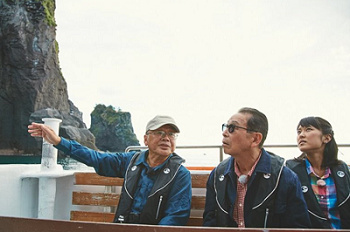

合地 信生（ごうち のぶお）
高松高校昭和44年卒
プロフィール
昭和44年(1969) 高松高校卒業
昭和52年(1973) 金沢大学大学院理学研究科修士課程修了
修士課程終了後、知床半島という大自然をフィールドにもつ斜里町立知床博物館の学芸員に。
平成23年(2011）役場を定年退職後も、引き続き臨時職員として知床博物館に勤務し、研究を続ける。
知床の地質研究の第一人者。

NHK「ブラタモリ『知床』編」で案内役を務める(2016.11)
研究
専門は地質学（変成岩岩石学）。神居古潭変成岩を、金沢大学の学生時代から研究。
北海道の形成について、神居古潭変成作用の最終ステージ50Maの高圧熱水変成作用が日高変成作用とテクトニクスで結びつくことをいまだに大きな夢を持って調査中。
また、遺跡から発掘される石斧に高圧変成岩（アオトラ石と青色片岩）がしばしば使われており、その産地同定と流通について道内や三内丸山遺跡を中心とした北東北の資料について調査。
著書
『森をつくったのはだれ? (科学で環境探検)』 共著 大日本図書(1999年)
「故郷を捨て、果てしなく遠い場所で生活している人間なので、これを読んだ知人の方から連絡をいただければうれしいです。」
合地さんのメールアドレスnobuo-g@apost.plala.or.jp